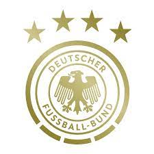
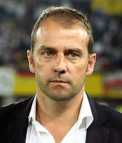

A Seleção Alemã de Futebol, é organizada pela Federação Alemã de Futebol (em alemão: Deutscher Fußball-Bund), instituição que administra o futebol na Alemanha, e representa o país nas competições de futebol da UEFA e FIFA. É uma das seleções masculinas de futebol mais bem sucedidas do mundo, participando de oito finais de Copas do Mundo, ganhando quatro delas. É o país que mais vezes chegou entre os semifinalistas, com 13 aparições, além de ser o detentor do maior número de medalhas no torneio, com 12 (quatro ouros, quatro pratas e quatro bronzes). Após o Brasil, é a seleção que conquistou o maior número de vitórias (66), além de deter o recorde de gols marcados (224) e o maior número de jogos disputados (106), em 18 participações no torneio.
Hans-Dieter "Hansi" Flick (Heidelberg, 24 de fevereiro de 1965) é um técnico e ex-futebolista alemão que atuava como meio-campista. Atualmente, comanda a Seleção Alemã, da qual foi auxiliar-técnico sob o comando de Joachim Löw entre 2006 e 2014
| Principais Jogadores | |||
|---|---|---|---|
| Nome | Idade | Altura | Peso |
| Matthias Ginter | 28 | 1,91M | 86 |
| Robin Gosens | 28 | 1,83M | 76kgs |
| Thilo Kehrer | 26 | 1,85M | 76kgs |
| Benjamin Henrichs | 25 | 1,83M | 78Kgs |
| David Raum | 24 | 1,80 | 78Kgs |
| Niklas Süle | 27 | 1,96 | 97kg |
| Nico Schlotterbeck | 22 | 1,91M | 86kgs |
| Armel Bella-Kotchap | 20 | 1,91M | 87kgs |